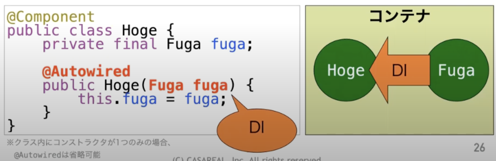

2. java spring¶
2.1. MVCとは¶
アプリケーションフレームワークの一つ。アプリケーションの処理を Model/View/Controllerの３つに分ける。
2.1.1. Model¶
データやDBへのアクセスなどを担う
2.1.2. View¶
クライアントからの入力やクライアントへの出力などを担う
2.1.3. Controller¶
ModelとViewをつなぐ。 Viewが受け取るクライアントからの入力をModelへ渡して処理を行い、Viewへ処理内容を連携する。
2.2. アプリケーションのレイヤについて¶
2.2.1. アプリケーション層¶
2.2.2. ドメイン層¶
2.2.2.1. Service¶
処理の開始と終了までで、一つのトランザクション単位であることを目安とする
2.2.2.2. Repository¶
DBにアクセスするものをRepositoryとしてまとめている。 ドメイン層では、Interfaceだけを定義して、実態はインフラストラクチャ層のImplで実装する。 どのようにデータアクセスしているかは隠蔽されている。
2.2.3. インフラストラクチャ層¶
2.2.3.1. Repository Implement¶
Domain Objectのライフサイクル管理を行う。
2.3. Springとは¶
MVCの考え方からSpring MVCという考え方が生まれる。 SpringMVCはライブラリなどが多くて、扱いが難しかった。 SpringMVCを使いやすくしたフレームワークとしてSpringBootが生まれた。
2.4. DI（依存性の注入とは）¶
依存性の注入とは、分解して具体的に言語化すると
依存性＝必要なインスタンス
注入＝自動的代入
すなわち、依存しているメソッド間のインスタンスのやり取りをコンテナが担うことで、依存性を下げてあげますよという考え方。
2.4.1. Springのコンテナ¶
Springではコンテナを持っている。コンテナとは、Javaのインスタンスの入れ物である。
コンテナで管理されるインスタンスをBeanと呼ぶ
コンテナはDispacherServletの中で管理されている。

2.4.1.1. Beanの定義方法¶
コンテナに対して、自分はコンテナに管理してほしいインスタンスですと教える方法が４つあり、２つが主流。
★Component-scan★
★Java Config★
関数型Bean定義
XML
2.4.1.1.1. コンポーネントスキャン¶
メソッド側で、僕はBeanになりたいですと立候補しておくイメージ。
対象となっているパッケージから＠Componentが付いたクラスを探す。 見つけたら、インスタンス化して、Beanとしてコンテナに保存する
以下のアノテーションは@Componentをつけたのと同じ効果がある
@Repository
@Service
@Configuration
@Controller
@RestController
@ControllerAdvice
@RestControllerAdvice
対象とするパッケージは、設定クラス(JavaConfig)で定義してあげる必要がある
以下で指定した場合、com.example配下の全てのパッケージがスキャン範囲となる。
※basePackeageを明示的に指定しないと、ConfigのパッケージがbasePackageとなる。（今回だとcom.example.config)
packege com.example.config;
@Configuration
@ComponentScan(basePackage="com.example")
public class AppConfig{}
2.4.1.1.2. Java Config¶
Java Configという集会所を作っておいて、そこにBeanになりたい人にきてもらうイメージ
Java Configクラスを作成して、JavaConfigのなかで、@Beanをつけてメソッドを作成すると、戻り値がBeanになる。 以下の例だと、返り値がBeanとなる
@Configuration
public class AppConfig{
@Bean
public Hoge hoge(){
return new Hoge()
}
}
2.4.1.2. コンテナの作成とBeanの取得方法¶
Java Configを指定して、コンテナを作成する。 コンテナはApplicationContextとして作成される。
Beanの取得はインスタンスの型を指定してgetBeanメソッドで取得
// コンテナ作成
ApplicationContext context = new AnnotationConfigApplicationContext(App.Config.class);
//Beanの取得
Hoge hoge = context.getBean(Hoge.class);
2.4.2. Spring BootにおけるJavaConfig¶
SpringBootにおいては@SpringBootApplicationがあるクラスがJavaConfigとなる。
@SpringBootApplicationは以下３つのアノテーションの役割を担う
@Configuration
@ComponentScan
@EnableAutoConfiguration
明示的にbaseComponentが指定されていないので、@SpringBootApplicationのパッケージがbasePackeageとなる

2.4.2.1. コンテナの機能¶
コンテナの主な機能は３つDI、スコープ定義、プロキシ作成
2.4.2.1.1. コンテナの機能①DI（依存性の注入）¶
objectAにobjectBが必要な時、objectAはobjectBに依存している状態である。 objectAの内部で、objectBをnewすると、objectBのメンテナンスや差し替えが大変になる。 ここで、依存性の注入（必要なインスタンスの自動的代入）をすることにより、object同士の結合が疎になるので、メンテナンスがしやすくなる。
Autowiredによる注入はコンストラクタに、@Autowiredのメンションを付与して引数に必要なBeanを指定すると、コンテナが、DIしてくれる。

DIには以下の３つの方法があるが基本的にはコンストラクタインジェクションが主流
コンストラクタインジェクション
setterインジェクション
フィールドインジェクション
2.4.2.1.2. コンテナの機能②スコープの定義¶
スコープとはコンテナが管理するBeanの有効範囲である。 基本的に、Beanは使いまわされることが前提のSingletonで生成される。
Singleton:インスタンスは１つで使いまわされる
prototype:必要な時にインスタンスが毎回作られる
session:セッションと同じ単位で使われる
request:リックエスト同じ谷で使われる
指定の方法としては、@Scopeを@Componentと一緒に指定する
@Scope
@Component
public class Hoge{..}
2.4.2.1.3. コンテナの機能③プロキシの作成¶
Beanを作成するときに元々のメソッドからインスタンスを作成して、それをそのままBeanにするのではなくて、Wrapしてから必要機能を追加したBeanをプロキシと呼ぶ。
AOPを実現するためにも利用されている技術。
2.5. AOP（Aspect Oriented Programming）とは¶
本来の処理の前後に割り込み処理を行う。
トランザクションの開始
トランザクションの終了
権限チェック
割り込めるのは開始・終了（正常・異常）・両方のいづれか
2.5.1. AOPの書き方¶
JavaConfigクラスに@EnableAspectJAutoProxyを書く必要があるが、springは書かなくてもデフォルトでONになっている。
割り込みしたい処理の書き方は@Aspectをつける

割り込まれる対象の処理は、対象のパッケージは以下にあるBean

2.6. pomとは¶
Project Object Modelの略
プロジェクトのビルド内容を設定するファイル
2.6.1. 基本設定項目¶
ルートノードで、POMのバージョン指定や読み込み、XMLスキーマの指定
<project xmlns="http://maven.apache.org/POM/4.0.0"
xmlns:xsi="http://www.w3.org/2001/XMLSchema-instance"
xsi:schemaLocation="http://maven.apache.org/POM/4.0.0 http://maven.apache.org/xsd/maven-4.0.0.xsd">
Mavenモデルのバージョン指定
<modelVersion>4.0.0</modelVersion>
プロジェクトの情報
<groupId>com.TEST.PJ</groupId> #プロジェクトの開発者ID
<artifactId>TESTPJ-APP</artifactId> #プロジェクトのID
<version>0.0.1-SNAPSHOT</version> # プロジェクトのバージョン
<packaging>jar</packaging> # パッケージ化する場合の種別
<name>TEST-app</name> # アプリケーション名（自由）
<url>http://maven.apache.org</url> # プロジェクトのWebサイト
pomで利用される属性
<properties>
<project.build.sourceEncoding>UTF-8</project.build.sourceEncoding>
</properties>
2.6.2. 依存するライブラリの設定項目¶
このプログラムがどのプログラムに依存しているかの記述を行う
<dependencies>
<dependency>
<groupId>junit</groupId> # 必須：依存するグループID
<artifactId>junit</artifactId># 必須：依存するアーティファクトID
<version>3.8.1</version> # 任意：指定しないと最新版
<scope>test</scope> # テストの場合にのみ指定
</dependency>
</dependencies>
2.7. アノテーション整理¶
2.7.1. @Controller¶
SpringBootにおいてControllerのクラスであることを認識させる
2.7.1.1. @RequestMappng¶
クライアントからのリクエストに対して、メソッドなどの対応付ができるreturnで返却されるStringはViewResolverでファイル名に変換されてクライアントに返却される。
2.7.2. @Service¶
ServiceImplに記述する。Serviceであることを認識させる。 DIの対象(bean)となり、DIコンテナに登録される
2.7.3. @Repository¶
RepositoryImplに記述する。 Repositoryであることを認識させる。
2.7.4. @Override¶
親クラスのメソッドをオーバーライドするときに記述する。 オーバーライドするつもりでできていない。していないつもりでしていたというミスを防げる。
2.7.5. @inject @Autowired¶
DIするためのメンション。Beanをコンテナから呼び出す
2.7.6. @Transactional¶
トランザクション管理が行われる。 メソッド開始時と正常終了時にコミットが行われ、例外時にはロールバックされる。
2.8. 技統本レクリャー¶
2.8.1. 20221116¶
2.8.1.1. プロジェクトを作成する¶
javaにはたくさんのライブラリが存在している。awsのAPIを呼ぶものやjsonやgithubなど、など。 javaが標準で提供しているものはjavaやjavaxという接頭辞がついている。 面倒なのはクラスライブラリは他のライブラリをいろいろ呼んでいる
pomのdependencyで使いたいライブラリを設定すると、mavenがライブラリを勝手に取ってきてくれる。 取ってきてくれるライブラリについては、ローカルに.m2フォルダが作成されて、ネットから拾ってきたライブラリを格納する。 この中に追加いたライブラリのjarファイルがある。 dependencyで指定すれば、関連するものは全て自動で撮ってくるので、細かく全部指定する必要はない mvnにかくとImportするか見たいな確認が来るのでOKすると、必要なのを裏で取ってくる mvn repositoryからdependencyのタグを取ってくることもできる。
mvnにはいくつかのステージがある packageはjar入るを作ってくれる。targetフォルダを作成して、中に、コンパイルしたクラスやjarファイルが出てくる jarファイルはzipファイルのようなものなので、その中に必要なライブラリのjarファイルを入れ手おいてくれる。
2.8.1.2. springでアプリケーションを作る¶
pomでbuildでspring-boot-maven-pluginを入れておくと、tomcatを仕込んでおいてくれる。
public static void mainが最初に走るのだけど、SpringApplication.runを実行する。 SpringApplication.runでDIコンテナとかを最初に作ってくれる。 @SpringBootApplicationを指定しておかないといけない。
2.8.1.3. src/main/javaの配下のディレクトリ構成¶
設定系のデータはConfigにしておく（川畑ルール 必要なライブラリをインポートして、オーバーライドするようなところをConfig配下にかく
@SpringBootApplicationを実行すると、同階層以下のパッケージについて、 @Configurationがついているものを設定クラスとして認識する。 @ComponentScanは、指定したパッケージ配下をスキャンするようになる。 アノテーションをつけることで、Springがスキャンしてきたときにどういった機能なのかを明示的に提示する @Controllerとして登録しておくと、Spring君もControllerとして扱ってくれる。 @Serviceを協会としてトランザクションを切り替えたりする @ComponentはUtilクラスとか、他のAPIにアクセスしたいような時に@Componentでつけたりする。 Springが認識しているアノテーションを付与したパッケージが認識されて使えるようになる。 Springが認識しているアノテーションを付与したパッケージ君はDIコンテナに入れられて使えるようになる。
2.8.1.4. コンパイルは何をしている¶
Beanに詰めて、tomcat起動してというのがみれる Springで作成するやつはやってみても良いかも
2.8.1.5. 総括¶
プロジェクト作って、必要なライブラリを準備して、実装していくプロセスを理解することができれば、Appの全体設計ができれば実装することができていく。 最初に何をすれば良いのかという雛形を理解していく！そしたら独り立ちできるはず。
2.8.2. 20221118 AWSで作るマイクロサービスアーキテクチャ¶
マイクロサービスは2014年くらいから言われていて、もう10年くらい マイクロサービスは独立性が一番の目的 独立性のメリット →疎結合性。多機能との調整が必要だったのを解消する。 Tokenとセットにして、バックエンドに問い合わせをしていくのが基本の動き。認証認可に従って、バックエンドは処理を返していく
2.8.2.1. サービスの分け方¶
サービスを分けるのが難しいし、トランザクション管理とかも難しい Cognitoに関するOIDCとかの文脈は別機械で
2.8.2.2. SpringSecurity¶
HandsONを試すとSpiringSecurityでログインとログアウトするだけのページが作成することができる。 Appのなかに、認証認可の仕組みを組み込むことができる。 OICDの認証認可も設定だけでできる！ただし設定項目は多い・・・ この設定さえ理解できれば、Cognitoでも、KeyCloakでもOktaでも良い この記事の中にgithubがあって、ブランチが切れているので、セクションごとに分かれている @Configurationを持っているやつをピックアップして、設定クラスと認定して、その配下にあるやつを対象にアプリを構築する MVCConfigについては、WebMvcConfigurerを継承しているので、これを継承するだけで、SpringMVCに含まれる全てを使える いろいろたくさん設定しないといけないのに、Bootのなかで組み込んでくれているので、設定をしてくれるのが便利だよ
コントローラーの@getMappinによって、@timeleafの仕様でhtmlファイルのファイル名を指定すれば、その対象ファイルを表示するようにコントロールしてくれる
SpringSecurityを使うための設定は二つ
pomにspring-boot-starter-securityなど３つdependencyを追加
securityのConfiguretionを作成する
@EnableWebSecurityのアノテーションを追加する（実質こいつは@Configurerationの機能を含んでいる
WebSecurityConfigurerAdapterの関数を継承することで、こいつは設定をいろいろ読み込んでおいてくれる
web.ignoring().anMatchersは、Springの認証認可の対象から外す対象を決めることを意味する。 CustomUserDetaiol→ユーザーデータ SuccessHandlerはログインが成功した時の挙動